This module will introduce you to deep learning and deep neural networks using PyTorch, a Python-based open source deep learning package created by Facebook. We will use PyTorch to introduce both fully connected deep neural networks (FCNs) and convolutional deep neural networks (CNNs) for image classification tasks.
Before you can use PyTorch, you must download and install its relevant modules in Anaconda. To do this, open an Anaconda command prompt and issue the command
You can review the instructions on the PyTorch web site for more information, as well as commands you can issue to verify the install has been performed correctly.
Deep neural networks (DNNs) are a relatively new area of focused research, based off the foundations of artificial neural networks (ANNs). ANNs and DNNs fall within the broad area of supervised machine learning algorithms. The original idea for a neural network was proposed by McCulloch and Pitts in 1943, based off a biological estimate of how neurons in the brain were hypothesized to function. The problem with the McCulloch-Pitts model was its inability to easily learn. To address this, Rosenblatt proposed the Perceptron, adding weights that allowed the ANN to "learn" by increasing and decreasing weights based on how well the current network categorized relative to a known, correct label (i.e., supervised learning).
In 1959, Widrow and Hoff developed MADALINE at Stanford University to remove echoes on phone lines. Interestingly, MADALINE is still in use. Careful analysis of MADALINE showed that it found a set of weights for a number of inputs, which is analogous to linear regression. In other words, ANNs at this point could not solve more complex, non-linear problems. Marvin Minsky and Seymour Papert at MIT proved this theoretically, effectively silencing research on neural networks for many years.
Moving into the 1980s, multilayer neural networks with hidden layers were developed. This was critical, since it provides one of the key advantages of a DNN: the ability to automatically create relevant features from the initial inputs. This is also where the terminology "deep" comes from. The intuition is that each hidden layer in a DNN uses results from the previous layer, allowing it to start with highly detailed features, then use those to proceed to identify more abstract elements. This led to another problem, however. Although it was understood how to train single-layer ANNs, it was not known how to adjust weights, biases, and activations on a multi-layer DNN.
To address this, the idea of backpropagation, which distributes error throughout the network, was proposed by Rumelhart, Hinton, and Williams in 1986. In simple terms, we are using calculus to assign some of the blame for error in the output layer to each neuron in the previous hidden layer, further propagating error at that hidden layer to its parent and so on. Initially, stochastic gradient descent was used to find an optimal set of weights to minimize error, although other approaches have now been proposed. Backpropagation is performed at the possible cost of significantly increased training times. Because of this, we now use clusters of graphics processing units (GPUs) which support 1000s of parallel operations to train a DNN.
DNNs have been used to solve previously intractable problems in a wide range of areas, including:
The basic structure of a DNN is made up of: an input layer; two or more hidden layers of neurons of some size; an output layer; edges connecting neurons between adjacent layers; activation values and biases at each neuron; weights on each edge.
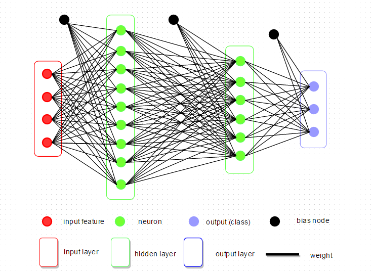
This example shows a FCN with two hidden layers. More complicated DNNs like convolutional neural networks precede the FCN with a set of convolution operations to extract features which are selected, filtered, and then used as an input layer into a final FCN for classification. We will begin our exploration of DNNs with a PyTorch example that classifies images of handwritten numbers from 0 to 9 using a simple FCN.
Neural networks, including deep neural networks, are made up of specialized perceptrons called neurons. A perceptron is an element that receives binary input(s) \(\{ x_1, \ldots, x_n \}\) and generates a binary output.
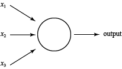
Weights \(\{ w_1, \ldots, w_n \}\) are normally applied to the inputs to define their importance. If the sum of the inputs multiplied by their weights exceeds a threshold or bias \(b_i\), the perceptron fires 1, otherwise it fires 0.
\[ \text{output} = \begin{cases} 0 \; \text{if} \; \sum_i{w_i\,x_i} \leq b_i \\ 1 \; \text{if} \; \sum_i{w_i\,x_i} > b_i \end{cases} \]We will normally simplify this notation by moving the bias inside the equation and using a dot product for the sum.
\[ \text{output} = \begin{cases} 0 \; \text{if} \; w \cdot x - b \leq 0 \\ 1 \; \text{otherwise} \end{cases} \]Bias \(b_i\) is a measure of how easy or difficult it is to make a perceptron fire. The larger \(b_i\), the more input or activation perceptron i needs to fire.
Although useful, perceptrons are inconvenient since both their inputs and outputs are binary. To address this, we normally convert perceptrons to neurons. Neurons accept continuous inputs and generate continuous outputs. To do this, neurons apply a function like sigmoid to produce smooth output over a fixed range. For example, "sigmoid" neurons accept continuous input and apply \(\sigma\) to the weighted sum of activation plus bias to produce continuous output on the range \(0, \ldots, 1\).
\[ \begin{align} z & = w \cdot x + b \\ \text{output} & = \sigma(z) = \frac{1}{1 + e^{-z}} = \frac{1}{1 + \text{exp}(-(w \cdot x + b))} \end{align} \]Intuitively, if \(z=w \cdot x + b\) is large, \(e^{-z} \approx 0\) so \(\sigma(z) \approx 1\) and if \(z\) is small \(\sigma(z) \approx 0\), just like a perceptron. The difference is that \(\sigma\) is smooth over the range \(0, \ldots, 1\) so a small change in weights or biases \(\Delta w_i\) or \(\Delta b_i\) will produce a small change in output, versus a perceptron's potential to flip its output from 0 to 1 or vice versa.
\[ \Delta \text{output} \approx \sum_i\frac{ \partial \, \text{output}}{\partial w_i} \Delta w_i + \frac{\partial \, \text{output}}{\partial b_i} \Delta b_i \]That is, \(\Delta\)output is linear in \(\Delta w\) and \(\Delta b\).
PyTorch's dataset repository includes the MNIST database of handwritten images, which includes 60,000 training examples and 10,000 test examples. It is a very common dataset to use to test learning or pattern recognition algorithms on real-world data, without the need to hand-label a large training dataset.
Normally, images are processed with CNNs. However, we will use a simple FCN to recognize the handwritten images. This is done by converting each handwritten digit image into a set of pixel values, then converting that into a one-dimensional vector. This 1D vector acts as input to one or more hidden layers, filters like ReLU (rectified linear unit), and finally to an output layer with ten possible classifications representing the ten digits 0–9. Here are two simple examples of the digits in the MNIST dataset.
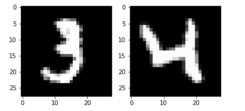
In our example neural network to "learn" MNIST images we have a \(28 \times 28 = 784\)-element input vector of greyscale intensities, an \(n=15\) neuron hidden layer, and 10 output values representing a decision on which digit the input image represents. To train and validate the DNN model, MNIST provides 60,000 labeled training images and 10,000 labeled test images, denoted as \(x\) and \(y\), respectively. Any individual \(x_i\) is a 784-length vector and the corresponding \(y_i\) is a 10-length output vector with all 0s except for the target digit position, which is 1.
Our goal is to train a neural network so output approximates \(y_i = y(x_i) \, \forall x_i\) in the training set. To do this, we define a cost function to measure accuracy or error for any given prediction.
\[ C(w,b) = \frac{1}{2n} \sum_x || y(x) - a ||^{2} \]where \(w\), \(b\), \(y\), and \(a\) are weights, biases, known output vectors (labels), and predicted output vectors (activation) for all training input samples \(x\). You should recognize this as the simple quadratic function mean squared error (MSE), where \(C(w,b) \rightarrow 0\) as we improve our ability to predict correct output.
Obviously, when we start we expect \(C(w,b)\) to be large. To reduce it, we optimize \(w\) and \(b\) throughout the network using gradient descent. Ignoring for now the specifics of our neural net, how can we minimize \(C(v)\) where \(v\) are tunable parameters? For simplicity, assume \(v=(v_1,v_2)\) is a two-dimensional parameter vector. Plotting \(C(v)\) produces a valley-like image.
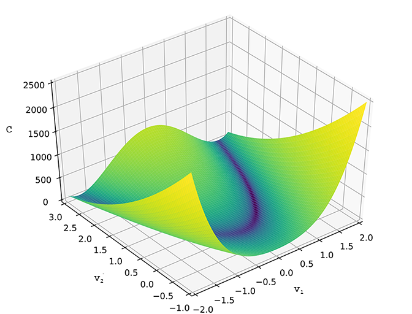
From any point on the valley, we want to move in a direction with the steepest slope towards the valley bottom (minimum \(C\) value). What happens when we move a small amount \(\Delta v_1\) in the \(v_1\) direction? Or a small amount \(\Delta v_2\) in the \(v_2\) direction?
\[ \Delta C \approx \frac{\partial C}{\partial v_1} \Delta v_1 + \frac{\partial C}{\partial v_2} \Delta v_2 \]We want \(C\) to be negative. Defining \(\Delta v = (\Delta v_1, \Delta v_2)^{T}\) and gradient of descent \(\nabla C =\,\)\(( \frac{\partial C}{\partial v_1}, \frac{\partial C}{\partial v_2} )\), we have
\[ \Delta C = \nabla C \cdot \Delta v \]Now, if we pick \(\epsilon\) s.t.
\[ \Delta v = -\epsilon \nabla C \]where \(\epsilon\) is the learning rate and therefore \(\Delta v\) is a small movement in the direction of steepest gradient, then
\[ \Delta C = \nabla C \cdot -\epsilon \nabla C = -\epsilon || \nabla C ||^{2} \]Since \(||\nabla C\,||^{2}\) is always positive, \(\Delta C\) is always negative. Setting \(v \rightarrow v^{\prime} = v - \epsilon \nabla C\) over and over, we will converge on a minimum \(C\), as long as \(\epsilon\) is not too big, causing us to "jump" back and forth over the minimum, or too small, causing convergence to be too expensive. Moreover, if we expand \(v\) into a vector of \(m > 2\) variables \(v=(v_1, \ldots, v_m)\), this approach continuous to work.
\[ \begin{align} \Delta C & = \nabla C \cdot \Delta v \\ \nabla C & = (\frac{\partial C}{\partial v_1}, \ldots, \frac{\partial C}{\partial v_m}) \\ \Delta v & = -\epsilon \nabla C \\ v \rightarrow v^{\prime} & = v - \epsilon \nabla C \\ \end{align} \]How do we extend this general gradient descent approach to our specific goal of optimizing \(C\) in a neural network. We simply rewrite the above equations in terms of \(w\) and \(b\).
\[ \begin{align} w_i \rightarrow w_i^{\prime} & = w_i - \epsilon \frac{\partial C}{\partial w_i} \\ b_i \rightarrow b_i^{\prime} & = b_i - \epsilon \frac{\partial C}{\partial b_i} \\ \end{align} \]We can now walk backwards through the layers in the neural network, adjusting (backpropegating) weights and biases for each neuron. To do this, recall \(C = \frac{1}{n} \sum_x C_x\) and \(C_x =\,\)\(\frac{||y_i(x_i) - a_i||^{2}}{2}\). To compute \(\nabla C\) we compute \(\Delta C_x \; \forall x\) and average the result.
\[ \nabla C = \frac{1}{n} \sum_x \nabla C_x \]If the number of neurons \(n\) is very large, we may want to sample \(\nabla C_x\). This is called stochastic gradient descent, where we randomly choose \(m \ll n\) training inputs to form a mini-batch \((x_1, \ldots, x_m)\), assuming
\[ \begin{align} \sum_{i=1}^{m} \frac{\nabla C_{x_i}}{m} & \approx \sum_x \frac{\nabla C_x}{n} = \nabla C \\ \nabla C & \approx \frac{1}{m} \sum_{i=1}^{m} \nabla C_{x_i} \\ w_i \rightarrow w_{i}^{\prime} & = w_i = \frac{\epsilon}{m} \sum_i \frac{\partial C_{x_i}}{\partial w_i} \\ b_i \rightarrow b_{i}^{\prime} & = b_i = \frac{\epsilon}{m} \sum_i \frac{\partial C_{x_i}}{\partial b_i} \\ \end{align} \]We then pick another mini-batch from the remaining samples, repeat the above process and continue until the training set is exhausted. This is defined as one training epoch.
To begin, we review and simplify the feed-forward component of DNN training to use matrix notation.
\(\therefore\) \(a_{j}^{\ell} = \sigma(\sum_k w_{jk}^{\ell} a_{k}^{(\ell-1)} + b_{j}^{\ell})\).
To convert to matrix format, define a weight matrix \(w^{\ell}\) for layer \(\ell\) where \(w^{\ell}\) are weights connecting to layer \(\ell\)'s neurons.
\[ w^{\ell} = \underbrace{ \begin{bmatrix} w^{\ell}[j,k] \\ = w_{jk}^{\ell} \end{bmatrix} }_{k\text{ input weights}} \;\;\Bigg\}\;{\scriptsize j\text{ neurons}} \]Similarly for layer \(\ell\), \(b^{\ell}\) is a bias vector with \(b_{j}^{\ell}\) the bias for neuron \(j\) in layer \(\ell\). \(a^{\ell}\) is an activation vector with \(a_{j}^{\ell}\) the activation for neuron \(j\) in layer \(\ell\).
Finally, we use vectorization to apply the activation function to weights times previous layer activations plus biases.
\[ \sigma \left( \begin{bmatrix} x_1 \\ \cdots \\ x_m \end{bmatrix} \right) = \begin{bmatrix} \sigma(x_1) \\ \cdots \\ \sigma(x_m) \end{bmatrix} \]Combining all of these, for layer \(\ell\)
\[ a^{\ell} = \sigma( w^{\ell} a^{(\ell-1)} + b^{\ell}) \]The value \(z^{\ell} = w^{\ell} a^{(\ell-1)}+b^{\ell}\) is important, so we explicitly extract it and define it as the weighted input to neurons in layer \(\ell\). We can now write
\[ \begin{align} a^{\ell} & = \sigma(z^{\ell})\\ z_{j}^{\ell} & = \sum_k w_{jk}^{\ell} a^{(\ell-1)} + b_{j}^{\ell} \end{align} \]The goal of backpropegation is to compute \(\frac{\partial C}{\partial w}\) and \(\frac{\partial C}{\partial b}\) for cost function \(C\), w.r.t. weights \(w\) and biases \(b\) in the network. To do this, we make two assumptions about \(C\). You can assume our \(C\) is MSE, \(C = \frac{1}{2n} \sum_x || y(x) - a^{L}(x)||^2\), where
For two vectors \(s\) and \(t\), the elementwise product \(s \odot t\) is \((s \odot t) = s_{j} t_{j}\), e.g.,
\[ \begin{bmatrix} 1 \\ 2 \end{bmatrix} \odot \begin{bmatrix} 3 \\ 4 \end{bmatrix} = \begin{bmatrix} 1 \cdot 3 \\ 2 \cdot 4 \end{bmatrix} = \begin{bmatrix} 3 \\ 8 \end{bmatrix} \]This is know as the Hadamard or Schur product.
At a basic level, backpropegation explains how changing \(w\) and \(b\) in a network changes \(C\). Ultimately, this requires computing \(\frac{\partial C}{\partial w_{jk}^{\ell}}\) and \(\frac{\partial C}{\partial b^{\ell}}\). To do this, we introduce an intermediate quantity \(\delta_{j}^{\ell}\), the error in neuron \(j\) in layer \(\ell\). Backpropegation computes \(\delta_{j}^{\ell}\), then relates it to \(\frac{\partial C}{\partial w_{jk}^{\ell}}\) and \(\frac{\partial C}{\partial b^{\ell}}\).
Suppose, at some neuron, we modify \(z_{j}^{\ell}\) by adding a small change \(\Delta z_{j}^{\ell}\). Now, the neuron outputs \(\sigma( z_{j}^{\ell} + \Delta z_{j}^{\ell} )\), propegating through follow-on layers in the network and changing the overall cost \(C\) by \(\frac{\partial C}{\partial z_{j}^{\ell}}\)\(\Delta z_{j}^{\ell}\). If \(\frac{\partial C}{\partial z_{j}^{\ell}}\) is large, we can improve \(C\) by choosing \(\Delta z_{j}^{\ell}\) with a sign opposite to \(\frac{\partial C}{\partial z_{j}^{\ell}}\). If \(\frac{\partial C}{\partial z_{j}^{\ell}}\) is small, though, \(\Delta z_{j}^{\ell}\) will have little impact on \(C\). Intuitively, \(\frac{\partial C}{\partial z_{j}^{\ell}}\) is a measure of the amount of error in a neuron.
Given this, we define error \(\delta_{j}^{l}\) of neuron \(j\) in layer \(\ell\) as
\[ \delta_{j}^{\ell} = \frac{\partial C}{\partial z_{j}^{\ell}} \]As before, \(\delta^{\ell}\) is a vector of errors for neurons in layer \(\ell\). Backpropegation computes \(\delta^{\ell}\) for every layer, then relates \(\delta^{\ell}\) to the quantities of real interest, \(\frac{\partial C}{\partial w_{jk}^{\ell}}\) and \(\frac{\partial C}{\partial b^{\ell}}\)
Eq 1: Computing \(\delta^{L}\) error in the output layer.
Components of \(\delta^{L}\) are
\[ \delta_{j}^{L} = \frac{\partial C}{\partial a_{j}^{L}} \sigma^{\prime}(z_{j}^{L}) \]\(\frac{\partial C}{\partial a_j^L}\) measures how fast cost is changing as a function of output activation \(j\). \(\sigma^{\prime}(z_y^L)\) measures how fast activation function \(\sigma\) is changing at \(z_y^{L}\). \(z_y^{L}\) is computed during feed-forward, so \(\sigma^{\prime}(z_y^L)\) is easily obtained. \(\frac{\partial C}{\partial a_j^L}\) depends on \(C\), but for our MSE cost function \(\frac{\partial C}{\partial a_j^L} =\,\) \((a_j^{L} - y_j)\).
To extend \(\delta_j^L\) to matrix-based form
\[ \delta^L = \nabla_a C \odot \sigma^{\prime}(z^L) \]where \(\nabla_a C\) is a vector whose components are \(\frac{\partial C}{\partial a_j^L}\). \(\nabla_a C\) expresses the rate of change of \(C\) w.r.t. output activations. In our example \(\nabla_a C = (a^L - y)\), so the full matrix form of Eq. 1 is
\[ \sigma^L = (a^L - y) \odot \sigma^{\prime}(z^L) \]Eq 2: Computing \(\delta^{\ell}\) from \(\delta^{\ell+1}\)
Given \(\delta^{\ell+1}\)
\[ \delta^{\ell} = ((w^{\ell+1})^{T} \delta^{\ell+1}) \odot \sigma^{\prime}(z^{\ell}) \]where \((w^{\ell+1})^{T}\) is the transpose of the weight matrix \(w^{\ell+1}\) for layer \(\ell+1\).
Suppose we know the error \(\delta^{\ell+1}\) at layer \(\ell+1\). Applying \((w^{\ell+1})^{T}\) moves error backwards, giving us some measure of error in layer \(\ell\). Applying the Hadamard product \(\odot \sigma^{\prime}(z^{\ell})\) pushes error backwards through the activation function in layer \(\ell\), giving us backpropegated error \(\delta^{\ell}\) in weighted input to layer \(\ell\).
We can use this to compute error \(\delta^{\ell}\) for any layer \(\ell\) by starting with \(\delta^{L}\) (Eq. 1), using it to calculate \(\delta^{L-1}\), then \(\delta^{L-2}\) and so on until \(L-i=\ell\).
Eq 3: Rate of change of \(C\) w.r.t. bias
It turns out that \(\frac{\partial C}{\partial b_j^{\ell}} =\,\) \(\delta_j^{\ell}\). That is, error \(\delta_j^{\ell}\) is exactly equal to the rate of change of bias \(\frac{\partial C}{\partial b_j^{\ell}}\). Since we already know how to compute \(\delta_j^{\ell}\), we can rewrite this as
\[ \frac{\partial C}{\partial b} = \delta \]where \(\delta\) is being evaluated at the same neuron as bias \(b\).
Eq 4: Rate of change of \(C\) w.r.t. weight
Here
\[ \frac{\partial C}{\partial w_{jk}^{\ell}} = a_k^{\ell-1} \delta_j^{\ell} \]so partial derivative \(\frac{\partial C}{\partial w_{jk}^{\ell}}\) depends on \(\delta^{\ell}\) and \(a^{\ell-1}\), which we already know how to compute. Our equation can be rewritten as
\[ \frac{\partial C}{\partial w} = a_\text{in} \delta_\text{out} \]where \(a_\text{in}\) is activation of the neuron's input to its weight \(w\) and \(\delta_\text{out}\) is the error of the neuron output for its weight \(w\). Examining just weight \(w\) and the two neurons connected by that weight
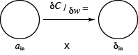
Combining all four equations, we obtain
PyTorch is, at its core, a tensor computing language with GPU acceleration support and a deep neural network library. PyTorch began as an internship program by Adam Paszke (now a Senior Research Scientist at Google) in October 2016. It was based on Torch, an open-source machine learning library and scientific computing framework written in the Lua programming language.
Three additional authors (Sam Gross, Soumith Chintala, and Gregory Chanan) formed the original author list. PyTorch was released as an open source machine learning language using the BSD open source license. Facebook currently operates both PyTorch and the Convolutional Architecture for Fast Feature Embedding (Caffe2). It is one of the standard libraries for deep neural network research and implementation.
A basic data structure for holding data in PyTorch is a tensor. An m × n tensor is a multidimensional data structure with n rows and m columns, very similar to a Numpy ndarray. One critical difference between tensors and Numpy arrays is that tensors can be moved to the GPU for rapid processing. Below is a very simple example of creating a 2 × 2 PyTorch tensor.
If we wanted to move the tensor to the GPU, we would first check to ensure GPU processing is available, then use the to() method to transfer the tensor from CPU memory to GPU memory.
Note: If you're using a Mac with Apple silicon (M1, M2, M3,
or M4), you need to use mps as your device,
not cuda since CUDA s specific to NVIDIA GPUs.
One important caveat is that you must do all processing on either the CPU or the GPU. You cannot split data structures and processing between the two processors. So, if you move your tensors to the GPU, you must also move your DNN models to the GPU and ensure all operations are performed on the GPU.
As an initial example, we will run a simple wheat seed classifier. The dataset contains properties of three types of wheat seeds. The goal is to use these properties to predict the type of wheat the seed represents. we will first demonstrate a "from scratch" DNN that uses a simple single-layer neural network to train, then predict wheat seeds.
| Province | Area | Perimeter | Compactness | Kernel Length | Kernel Width | Assymetry | Groove Length | Type |
|---|---|---|---|---|---|---|---|---|
| Ontario | 15.26 | 14.84 | 0.871 | 5.763 | 3.312 | 2.221 | 5.22 | 1 |
| Manitoba | 14.88 | 14.57 | 0.8811 | 5.554 | 3.333 | 21.018 | 4.956 | 1 |
| Nova Scotia | 19.13 | 16.31 | 0.9035 | 6.183 | 3.902 | 2.109 | 5.924 | 2 |
| \(\cdots\) | ||||||||
The following Python-only DNN uses a simple single-layer 10-neuron DNN (ANN, actually) with a learning rate \(\epsilon=0.1\), a learning rate decay of 0.01 per epoch, 1000 training iterations per epoch, a single epoch, and five-fold cross validation during testing.
Next, we'll show the processing the same dataset, but instead of doing it in raw Python, we'll use PyTorch, Facebook's Python-based DNN library. This will demonstrate how much easier it is to use PyTorch to build a significantly more complicated DNN to train, then predict wheat types based on wheat seed properties.
The purpose of these examples is, first, to show you how to code your own DNN using basic Python, then how to use one of the most popular Python libraries (TensorFlow, programmed in C, is the other candidate) to perform the same computation in a simpler to program and more sophisticated, manner.
PyTorch's dataset repository includes the MNIST database of handwritten images, which includes 60,000 training examples and 10,000 test examples. It is a very common dataset to use to test learning or pattern recognition algorithms on real-world data, without the need to hand-label a large training dataset.
Normally, images are processed with CNNs. However, we will use a simple FCN to recognize the handwritten images. This is done by converting each handwritten digit image into a set of pixel values, then converting that into a one-dimensional vector. This 1D vector acts as input to a single hidden layer, an ReLU (rectified linear unit) filter, and an output layer with ten possible classifications representing the ten digits 0–9. Here are two simple examples of the digits in the MNIST dataset.
Here is a Jupyter Notebook we will use to load the MNIST dataset, construct a simple FCN, then train and test it on the MNIST data.
Even with a simple FCN with a single hidden layer and an ReLU filter, five training epochs (evaluating the training dataset five times) produces results of 97% or better on the test dataset.
To see how well an FCN works on real two-dimensional images, we will work with the CIFAR10 dataset, also a part of PyTorch's dataset repository. CIFAR10 contains 50,000 training images and 10,000 test images of size \(32 \times 32 \times 3\): 32 pixels wide by 32 pixels high by 3 pixel components R (red), G (green), and B (blue).
Note the classes variable. This is used to convert the
label value for an image into a semantic text description of the class
it belongs to. You will probably want to define this and index into it
to better understand which classes the images belong to.
If you want to examine some of the images in the CIFAR10 dataset, you can modify the code in our original FCN example. However, a simpler way to do this and show more images would be as follows.
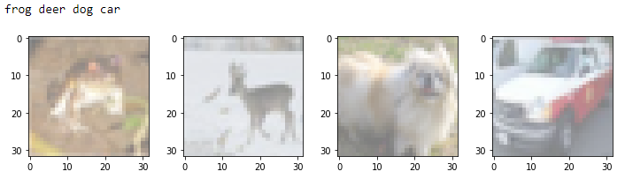
Apart from changing any occurrences 28 * 28 to 32
* 32 * 3 (to account for the different input size), the
remainder of the code can be identical to the MNIST FCN. You're
certainly encouraged to also vary things like
criteria, optimizer, hidden_size,
the number of hidden layers, and other properties of the FCN to try to
improve performance. Remember that, for ten classes, just like the
MNIST dataset, chance is 10%. You're unlikely to obtain accuracies
anywhere near the 97% we produce for the MNIST images, but you should
be able to do much better than 10%, even for this most simple FCN.
Here is a simple Jupyter Notebook that trains on the CIFAR10 dataset using our simple FCN.
The wheat dataset is fairly easy to process, but it is probably more representative of the type of task you need to solve: classification from one or more input properties. DNNs themselves have been applied most successfully to image data using convolutional neural networks (CNNs). A CNN converts an \(n \times m\) image to an \(nm\) vector, then uses that vector as input into a convolution stage. Here, a collection of \(k\) kernels are convolved against the pixels and their immediate neighbours to produce scalar values. For each kernel, a column of \(nm\) convolved values are created, one for each pixel in the image. In the simplest CNN, the column values are evaluated to produce a single, representative value. For example, max scans a column and extracts the largest value. These values form a \(k\)-length input vector to a follow-on fully connected network. This network processes output from the CNN to generate a final classification prediction.
Convolutional neural networks (CNNs) extend FCNs by preceding the fully connected layers with a set of convolutional layers. CNNs are commonly used to analyze images, although recent research has shown that they can handle other data modalities like text with excellent performance.
CNNs are made up of a number of standard operations to produce new, hidden layers. These include
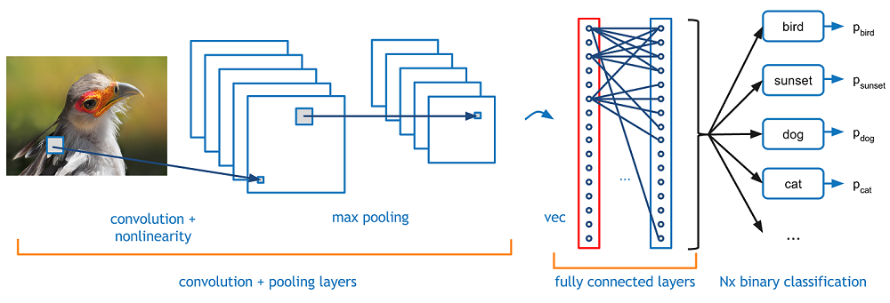
In practice, it is common to apply a series of CONV-RELU layers, follow them with a POOL layer, and repeat this pattern until an image has been processed to a small size. At this point, results are formed into a 1D vector which acts as input to an FCN. The FCN produces a set of probabilities for each possible classification (softmax).
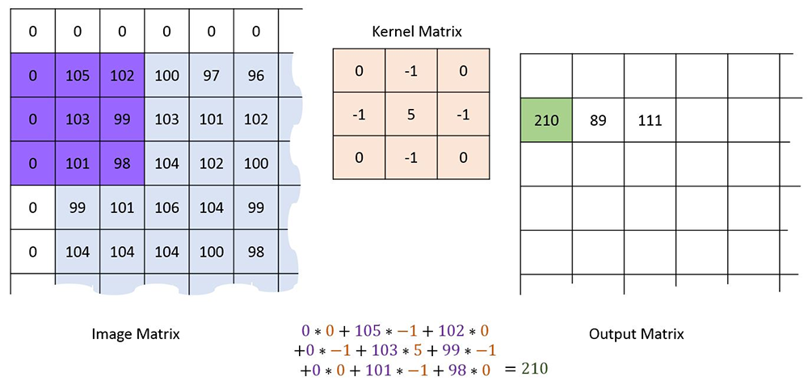
Convolution combines a pixel in an image and its neighbours by placing a kernel of a given size centered over the pixel, then multiplying the corresponding pixel and kernel values, and summing them together to produce a final filtered result.
The example above using a 3×3 kernel with values -1, 0, and 5 at various positions within its nine cells. When we center it over the pixel at the center of the purple box, multiple, and sum, we obtain a final filtered value of 210 for that position in the image. Kernels are designed to identify specific properties of an image, producing large values when those properties are located, and small values when they are not. For example, the Kirsch filter is designed to identify edges in an image. Convolution of a simple animation with a Kirsch filter produces the result shown below.
|
|
|
||||||||||||
|
|
|||||||||||||
Normally, we use numerous kernels to identify different properties or features in an image. Each kernel produces a feature map from the image. These feature maps are normally stacked one on top of another, producing a result with width and height one less than the original image size, and depth equal to the number of kernels applied to the image. How does the CNN decide on the kernel values for each kernel? This occurs during training. Kernel values are initially random, and slowly converge along with edge weights during backpropagation to identify image properties salient to classifying the images.
Filtering adjusts values in a feature map, for example, by normalizing them, or by removing negative values. The common ReLU filter, for example, removes negative values and retains positive values.
|
|
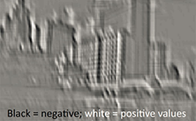 |
|
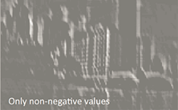 |
Pooling takes a feature map, and reduces its size by aggregating block of values. Aggregation can use any common mathematical operator like average, median, maximum or minimum. Pooling uses a window size which defines its width and height, and a stride which defines the step size it uses as it slides over the feature map values it pools.
|
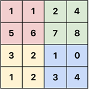 |
max pooling → 2×2 window → stride 2 |
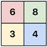 |
Recall in the previous discussion of FCNs, we used the MNIST handwriting image dataset. We are now switching to the CIFAR10 dataset of photographic images. In your exercise, you were asked to re-purpose the FCN to handle images from CIFAR10. Here is a simple Jupyter Notebook that does that.
Although this produces results better than chance, we can further improve performance by using a simple CNN.
Results for the CNN are indeed better than the FCN, but only by a few percentage points. This suggests the CNN could be improved possibly significantly, by expanding the CONV/RELU/POOL part of the image to better capture the features needed to differentiate different image classes from one another. One clue is in the individual class accuracies, which show that natural images like cats and deer are being labeled much less accurately than man-made images like cars and trucks.
Recurrent neural networks (RNNs) are normally used to handle sequence-based data \(I= \{ i_1, \ldots, i_n \}\). In simple terms, a basic DNN is designed. The first sample in the input sequence \(i_1\) is fed into the DNN, producing both an output \(o_1\) and a hidden output \(h_1\), \(o1 = h1\). The output can be fed into a standard FCN is the user wants to use it for classification. The hidden output \(h_1\) is combined with the next sample in the input sequence \(i_2\), and this pair \((h_1,i_2)\) is used as input into the DNN. This produces another output \(o_2\) and hidden output \(h_2\), \(o_2 = h_2\). The process continues until all samples in the input sequence are processed, producing a final output \(o_n\) and hidden output \(h_n\). In other words, a single DNN processes input samples and hidden output from the previous step recursively or recurrently, generating a result that represent both the output from the current RNN step and a hidden output for the next RNN step.
Note that one detail was left unspecified: if the DNN expects a sample input and previous hidden output pair as input, what is the hidden output for the first step in the recursion? Normally, a random hidden output \(h_0\) is generated and used for the first processing step in an RNN.
Visually, these images from Michael Phi's excellent page on LSTMs and GRUs shows clearly how input samples \(i_j\) from the input sequence \(I\) are fed into the RNN's DNN structure one-by-one.
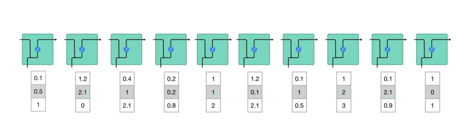
This close-up image shows how the hidden output \(h_{j-1}\) and the current input \(i_j\) are combined and passed through a tanh function to produce a continuous output \(o_j\) and hidden output value \(h_j\).
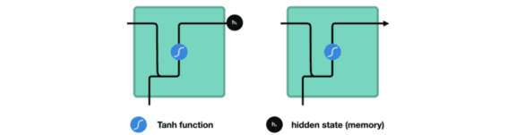
One way of understanding RNNs is that they use the concept of sequence memory. Over time, they have the ability to "learn" sequential patterns. In theory, this is something an FCN or CNN would have more difficulty to do, since an RNN uses previous information (hidden output) where FCNs and CNNs do not. Programatically, this can be expressed in the following way.
Although basic RNNs are designed to "remember" previous results, they do have an important problem. As an RNN processes inputs, it begins to forget what it has seen in previous steps. Intuitively, you could say that a basic RNN has a short-term memory, but not a long-term memory. This happens because of the way backpropegation occurs. To understand this, think of how any DNN works. There are three major steps: (1) feedforward; (2) error based on predicted class; (3) backpropegation of error based on gradient descent to adjust edge weights. At any given layer in the DNN, its gradient values depend on the successive layer's gradient values. So, if the following layer has small gradient values, the current layer's gradients will be even smaller. This is the vanishing gradient effect. Layers near the beginning of the DNN are learning little or nothing.
Consider an RNN, where each step in the RNN is analogous to a layer in a DNN. A method similar to backpropegation (backpropegation over time) is used to improve the network, so the vanishing gradient effect occurs over steps in the RNN, as opposed to layers in a DNN. This explains intuitively why an RNN can remember recent timesteps, but not ones further back in time.
What is the practical effect of the lack of long-term memory? Consider an RNN processing a sentence term by term.
It's easy for us to recognize that "he started chasing it" refers to Goro. But an RNN may no longer remember that "he" refers to a dog named Goro. This is a serious disadvantage for a type of DNN specifically designed to process sequence data.
Long short-term memory (LSTM) DNNs are a type of RNN designed to address the vanishing gradient problem. Initially introduced by Hochreiter & Schmidhuber in 1977, LSTMs use a set of three "gates" to maintain both a long-term and a short-term memory. Below is an image of the internals of an LSTM.
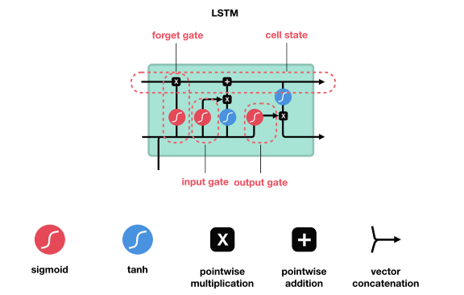
To understand what happens internally within the LSTM, we can look at the various data paths. An LSTM is made up of three pieces of information: the current input value from the sequence \(i_j\), the previous hidden state \(h_{j-1}\), and the previous cell state \(c_{j-1}\). Each iteration of an LSTM RNN produces a new hidden state \(h_j\), and new cell state \(c_j\), and an output \(o_j\), with \(h_j = o_j\) as before. Intuitively, we think of the hidden state as our short-term memory, and the cell state as our long-term memory.
The path along the top manages the cell state \(c_{j-1}\). As noted above, the cell state is the long-term "memory" of the network over the sequence processed to date. We must decide what to remove or "forget" from the cell state. Not surprisingly, this is called the forget gate layer. The previous hidden state \(h_{j-1}\) and current input \(i_j\) are used to control this decision. Mathematically, the output combines the hidden and input values, then passes them through a sigmoid operator.
\[ f = \sigma ( W_f \cdot [ h_{j-1},i_j ] + b_f ) \]The previous hidden state and current input value \([ h_{j-1},i_j ]\) are multiplied by a weight in \(W_f\) and combined with a bias in \(b_f\), then passed through the \(\sigma\) function to transform the result to the continuous range \([0 \ldots 1]\). A value close to 0 means completely forget, and a value close to 1 means fully retain. Remember that we are (normally) working with vectors \(h_{j-1}\), \(i_j\), \(W_f\), and \(b_f\). The resulting vector \(f\) is pointwise-multiplied to the previous cell state \(c_{j-1}\) using the elementwise product operator \(\odot\) to alter its values. At this point it should be clear why values close to 0 or close to 1 remove or retain information in \(c_{j-1}\).
Next comes the input gate, which decides what new information will be stored in long-term memory \(c_j\). As with the forget gate, it combines the previous hidden state \(h_{j-1}\) and the current input value \(i_j\) to make this decision. This is made up of two parts \(i_1\) and \(i_2\). \[ \begin{align} i_1 & = \sigma( W_{i_1} \cdot [ h_{j-1}, i_{j} ] + b_{i_1} )\\ i_2 & = \textrm{tanh}( W_{i_2} \cdot [ h_{j-1}, i_{j} ] + b_{i_2} )\\ \end{align} \]
Intuitively, \(i_1\) dictates what information "passes through" to the cell state, again with 0 indicating no pass-thru, and 1 indicating complete pass-thru. \(i_2\) is more difficult to explain intuitively, but its purpose is to regulate the network. \(i_1\) and \(i_2\) are multiplied, and the result is pointwise-added to the cell state after the forget gate is applied. Again, at this point it should be clear how values on the range \([0 \ldots 1]\) are affecting what new information is being added into long-term memory.
The final stage is the output gate, which combines all three pieces of information: the previous hidden state \(h_{j-1}\) (short-term memory), the current input value \(i_j\) (new input), and the new cell state after the forget and input gates are applied, \(c_j\) (long-term memory) using two parts \(o_1\) representing a combination of the previous hidden state and the current input value and \(o_2\) representing long-term memory.
\[ \begin{align} o_1 &= \sigma( W_{o_1} \cdot [ h_{j-1}, i_{j} ] + b_{o_1} )\\ o_2 &= \textrm{tanh}( W_{o_2} \cdot c_j + b_{o_2} )\\ h_j, o_j &= o_1 \odot o_2\\ \end{align} \]The new short-term memory \(o_1\) and long-term memory \(o_2\) are pointwise-multiplied to produce the new hidden state and output \(h_j\) and \(o_j\) for the current sequence entry.
As with all DNNs, the key on how the network functions lies in its weights and biases \(W_f\), \(b_f\), \(W_{i_1}\), \(b_{i_1}\), \(W_{i_2}\), \(b_{i_2}\), \(W_{o_1}\), \(b_{o_1}\), \(W_{o_2}\), and \(b_{o_2}\). And as with all DNNs, these values are updated during each step of DNN training by using gradient descent and optimization to adjust the weights and biases in directions that produce results with a lower loss or error.
One final note about LSTMs is that they generally come in two forms: many-to-many or many-to-one. The difference is in whether we care about intermediate output values, or only the final output value produced after the last input \(i_n\) in the sequence is processed. For example, if we are performing text generation, we would use a many-to-many approach. The output from each step would be fed through an FCN to produce a generated term, appended to the terms to date as we build up a sentence related to the input being processed. If we were performing sentiment analysis, we would most likely use a many-to-one approach, where we ignored intermediate outputs and passed only the final output through an FCN to determine a sentiment for the input sequence as a whole.
As a "simple" example of an LSTM, we'll use a built-in dataset from seaborn, a Python statistical graphics and visualization library. seaborn includes a airline flight dataset with 144 months of data that includes, among other things, the number of passengers that flew each month. We will use an LSTM RNN to train on twelve months (one year) of passenger data, then use the resulting model to predict the number of passengers flying the month immediately following our twelve month training period.
To start, we load the libraries we will use in our program.
Next, we will create our LSTM neural network. Since this is a simple example, the LSTM will be made of of a recurrent node as described above, with output from the node fed into a fully-connected network with a single hidden layer.
We will also create a helper function that takes a full sequence of monthly passenger data, and breaks it into tuples of training and label data. The training data is a list of twelve months of passenger counts \(t_i = \{ p_j, \ldots, p_{j+11} \}\). The label is the passenger count for the month immediately following the twelve-month training period \(l_i = p_{j+12}\). Each of these \((t_i, l_i)\) tuples are stores in a list of training samples used to train our LSTM \(T = \{ t_0, t_1, \ldots, t_{119} \}\).
Next, we will load our dataset, transform the values from raw passenger counts into "normalized" values on the range \([0 \ldots 1]\), then use our helper function create_IO_seq to create our training sequence.
Finally, we can create our LSTM RNN, choose our loss and optimizer functions (mean squared error and Adam, respectively), and use our training sequence to teach the model how to predict future passenger counts based on the previous year's monthly passenger count sequences. We will process the entire training sequence for 150 epochs.
Notice an important subtlety here. The order of processing for our LSTM is:
Critically, gradient descent, backpropegation, and weight optimization happen after each 12-month sequence is processed, and not after each month in the 12-month sequence is processed. This detail is important to understand.
Once the network is trained, we can predict passenger counts for the final twelve months, and compare them to the known counts. Notice we have two options for testing. We can take the known 12-month sequences, or we can take a combination of the known and predicted values to form a 12-month sequence.
\[ \begin{array}{r l l} t_1 &=\;\; \{ p_{121}, p_{122}, \ldots, p_{132} \} &\rightarrow \;\; l_1\\ t_2 &=\;\; \{ p_{122}, p_{123}, \ldots, p_{133} \} &\rightarrow \;\; l_2\\ &\qquad\qquad\,\cdots&\;\\ t_{12} &=\;\; \{ p_{132}, p_{133}, \ldots, p_{143} \} &\rightarrow \;\; l_{12}\\ \\ &\;\;\;\textrm{versus}\\ \\ t &=\;\; \{ p_{121}, p_{122}, \ldots, p_{132} \} &\rightarrow \;\; l_1\\ t &=\;\; \{ p_{122}, p_{123}, \ldots, l_{1} \} &\rightarrow \;\; l_2\\ &\qquad\qquad\,\cdots&\;\\ t &=\;\; \{ p_{132}, l_{1}, \ldots, l_{11} \} &\rightarrow \;\; l_{12}\\ \end{array} \]We choose to implement the second approach. This approach would be required if you are using all of your known data to predict a target variable different from your predictors. For example, suppose we had 144 months of temperature data, and 156 months of precipitation data. If we use the full 144 months of temperature data to build our model, then the final 12 months we predict for testing have no corresponding temperature data. In this case, we have no choice but to use our predictions to "fill in" the unavailable temperature data as we predict the 1st, 2nd, \(\ldots\), and 12th precipitation values. The tradeoff is more data during training versus estimated data that likely contains errors during testing for accuracy.
Finally, to visually inspect our predictions, we plot the full 144-month sequence of known passenger counts in blue, then show the last twelve months of predicted passenger counts in orange.
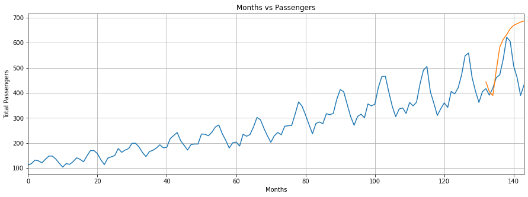
The results are acceptable but not outstanding, although the LSTM was able to catch the up–down seasonal variation in the data, something a basic RNN would probably miss. You can compare this to an approach where we use only known values during testing. Not surprisingly, this produces slightly better results.
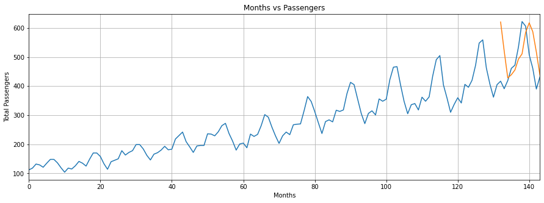
Generative adversarial networks (GANs) use a pair of DNNs that collaborate to try to generate examples of a pattern contained in an unlabelled dataset. Unlike unsupervised machine learning algorithms that attempt to classify or cluster samples based on similarity, GANs attempt to generate samples that are plausible or, ideally, indistinguishable from real samples contained in the original dataset. GANs were originally introduced by Ian Goodfellow et al. They are made up of two sub-models:
The generator model was originally designed to take a fixed-length random vector as input, and use it to generate a plausible sample based on the input dataset. This is achieved through a standard DNN training process, after which points in the multidimensional vector space map to samples in the dataset. This is often described as a compressed representation of the original data distribution, where the vector space is a set of latent variables (i.e., hidden variables) that are important but not directly observable.
The discriminator is a standard classification model. After training its job is to label a sample as real or generated.
Once the discriminator and generator models are constructed, a two-player game ensues in an unsupervised manner. The generator and discriminator are improved together. The generator constructions a collection of generated and real examples. The discriminator classifies the examples as real or generated. Based on its accuracy, the discriminator is updated to improve its discrimination abilities during the next round of the game. Equally importantly, the generator is updated based on how well or how poorly the generated samples fooled the discriminator. In the game theory sense, the two models are seen as adversarial and playing a zero-sum game, that is, the gain for one model represents an equivalent loss for the other model. In the GAN environment, zero-sum means that when the discriminator successfully identifies a sample, it is rewarded and no change is made to its model parameters, while the generator is penalized and updates are made to its parameters. Alternatively, if the discriminator is unsuccessful, it is updated and the generator is left as-is. In a perfect situation, the generator will fool the discriminator 50% of the time (i.e., the discriminator is guessing whether a sample is real or generated.)
A useful extension to GANs is cGAN or conditional GAN. Conditional GANs allow conditioning the DNNs with additional information, for example, subclass labels. For example, suppose we are classifying flower images. In addition to determining whether a flower image is real or generated, you can add a flower type label (e.g., tulip, rose, daffodil) to try to learn the differences between them. This allows specific types of flower images to be generated.
Constructing cGANs involves adding a label to both the real and generated images, so the discriminator understands what it is trying to discriminate. The following figure shows a simple example of the structure of a cGAN.
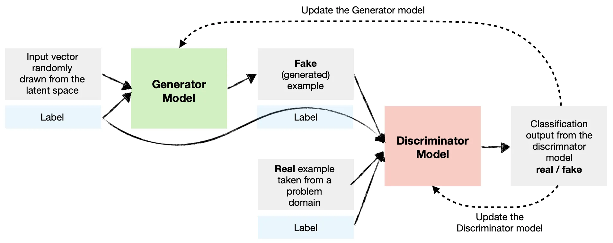
Below is an example of the MNIST problem solved using a single-layer FCN (Jupyter Notebook, Python file). Extend this example to use two hidden layers instead of one. The second hidden layer should take input from the first, contain 64 nodes, and use ReLU to transform its output to be continuous. Note: to achieve this, you should only need to make minor changes in the FCN class's init() and forward() methods.
Full Python code solution: MNIST-FCN.py
Normally, image data is processed with a CNN rather than an FCN. This worked well here because taking the \(2 \times 2\) image and concatenating rows to create a single vector of greyscale values formed patterns that distinguished different digits well. Could we do better with a CNN? Would you like to find out? If so, try implementing one.
This is more complicated than the previous example, because you will need to completely replace the FCN class with a CNN class. The rest of the code can remain unchanged, except for: (1) using a different criterion better suited for images, (2) no need to flatten images because a CNN can handle 2D images directly, unlike an FCN which expects its input to be single 1D vector, and (3) the evaluation section of the mainline, which will need to account for the format of the output from the CNN model.
Here is the CNN model structure you should use.
view(), since a CNN takes the 2D
\(28 \times 28\) greyscale images directly.
Full Python code solution: MNIST-CNN.py
In my testing, results from the CNN were 98% or higher, slightly better than the FCN example.
OpenAI provides the ability to interact with different versions of ChatGPT programatically. Our particular interest is using ChatGPT with Python. To do this, you must first install the openai library, which is available in Anaconda's conda-forge repository.
Although we will provide you with an API key to allow you to call the ChatGPT API, you may want to setup your own account at some point in the future. As of March 2025, this is how you do this on OpenAI's web site.
Once you have an API key and associated funds to support calls through the key, you can start using the openai library to conduct conversations. A conversation is a set of back-and-forth questions and responses between your program and one of OpenAI's large language models. A conversation is maintained as a Python list of dictionary elements. Each dictionary element consists of a role entry and a content entry. The role is either assistant to identify the entry as an LLM-generated entry, user to identify the entry as instructions from the user, or developer used to initialize the LLM to respond in a certain way. The developer entry is usually the first entry in the message list.
By maintaining a list of back-and-forth question-and-answer results and passing the entire list with each new user question, you provide context to OpenAI's LLM. It will not only answer the most recent question you ask, but it will also look at the conversation to date and tailor its answer based on past questions and answers that occurred throughout the conversation.
If this pair of messages is sent to OpenAI's gpt-4o-mini LLM, the response will be something like this.
Based on this simple example, it's easy to see how you could develop a "conversation loop" where you continued a conversation back-and-forth with an LLM until you were done.
Here is a simple example conversation with user questions and LLM answers in the style of a "northerner from the northeast United States", something that was requested using the developer role at the very beginning of the conversation.